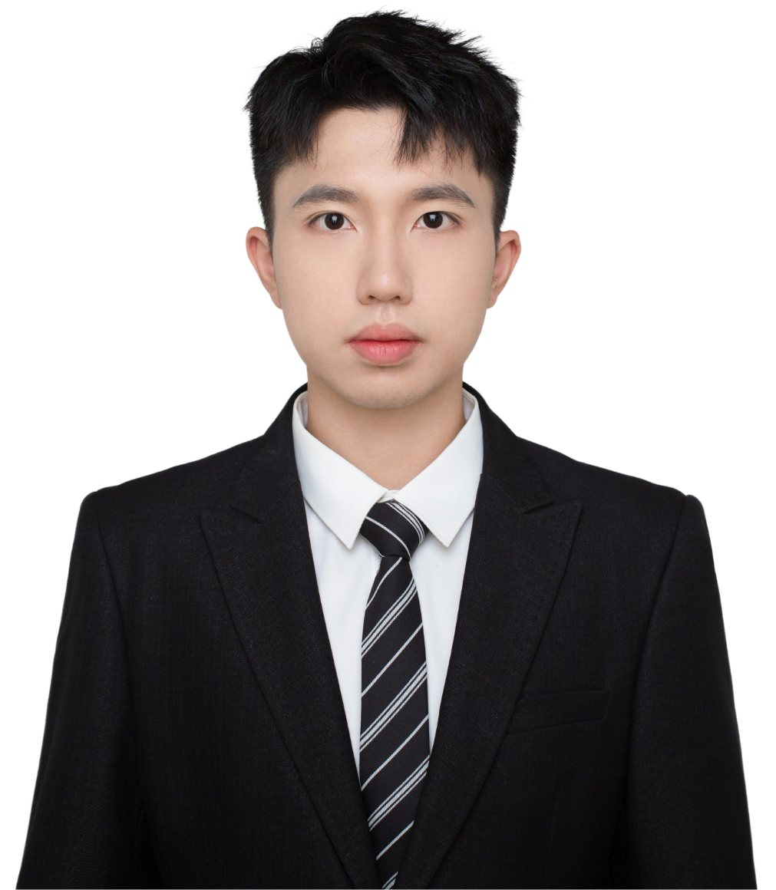
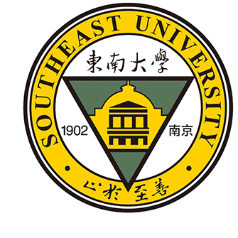
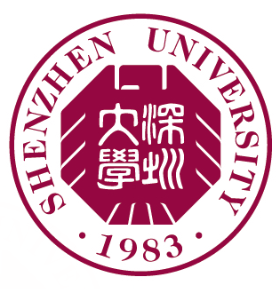
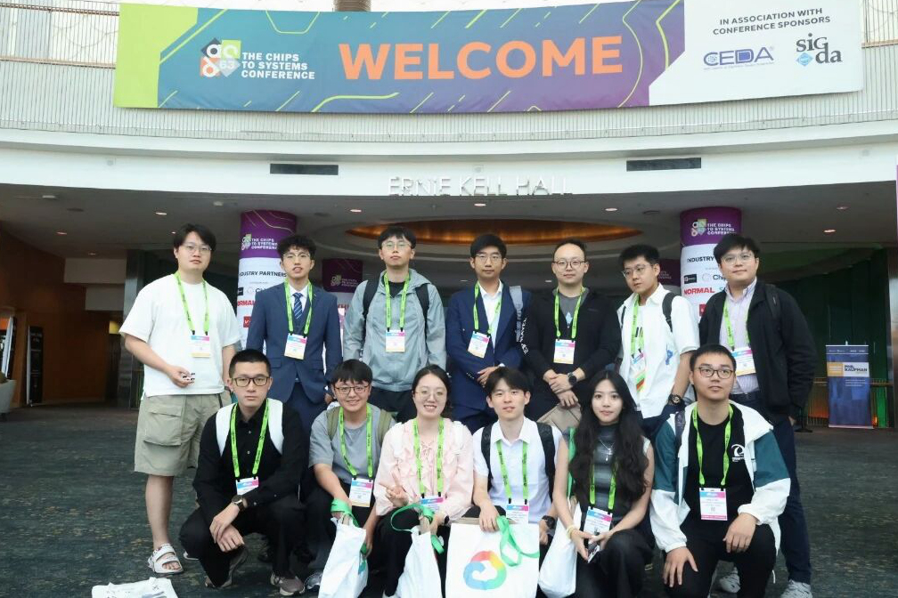
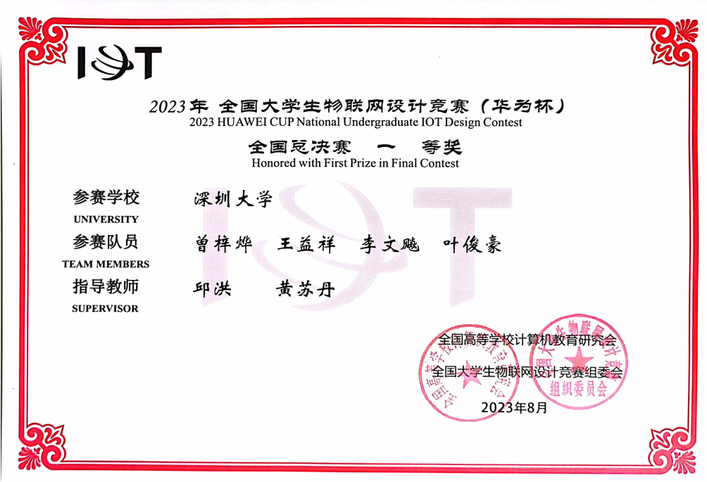
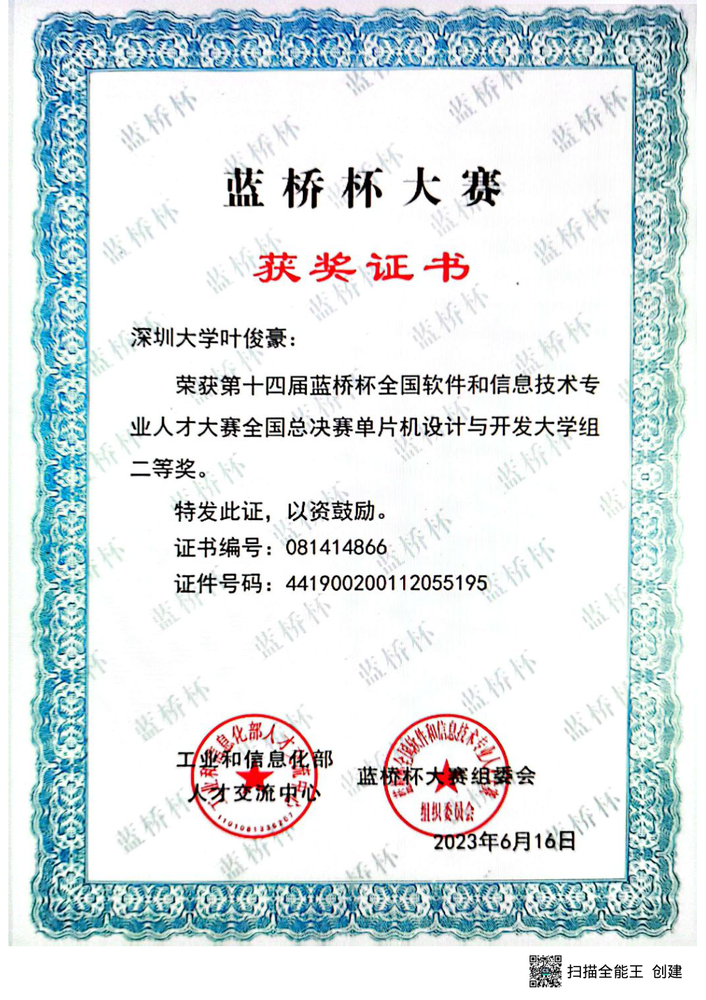
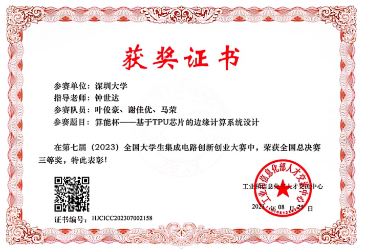
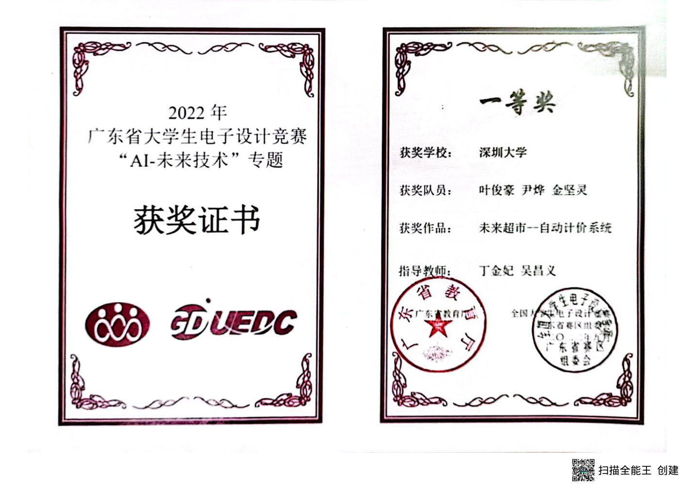
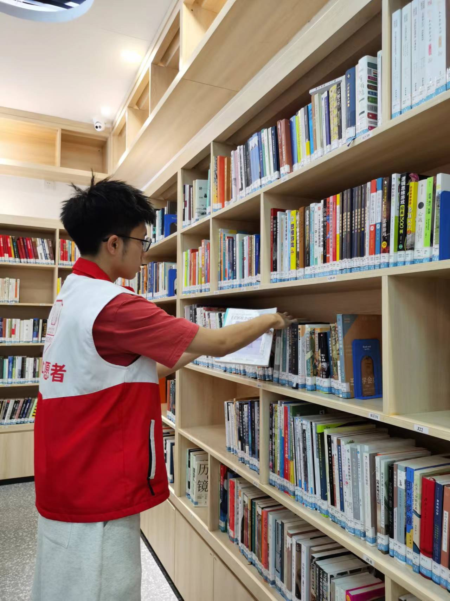

Automated UVM Generation
Turn RTL specifications and protocol knowledge into reusable testbenches with less manual setup.
PhD Student at Southeast University · AI for EDA · RTL Verification

Hi! I am Junhao Ye (叶俊豪), a PhD student in the School of Integrated Circuits, Southeast University, advised by Prof. Zhe Jiang. I received my bachelor's degree from Shenzhen University in 2024 and joined Southeast University for graduate study the same year.
My research focuses on LLM-assisted chip verification, especially automated UVM testbench generation, coverage-guided verification, and RTL debugging. I am interested in making verification workflows more efficient and reliable for complex SoC designs.
你好！我是叶俊豪，东南大学集成电路学院博士生，导师是江哲老师。本科毕业于深圳大学。我的研究聚焦大模型辅助芯片验证，包括 UVM 验证环境自动生成、覆盖率驱动的激励优化与 RTL 错误修复。
I work at the intersection of large language models and hardware verification, from IP-level RTL to subsystem-scale UVM environments.
Turn RTL specifications and protocol knowledge into reusable testbenches with less manual setup.
Use simulation feedback to refine stimuli and expose hard-to-reach behavior across IPs.
Combine UVM workflows and LLM reasoning to locate and repair syntax and functional faults.
Selected peer-reviewed work. My name is in each author list.
Integrated as a verification tool in ChatDV (project note).





Blue Bridge Cup · Microcontroller Design and Development

China College Students' IC Innovation and Entrepreneurship Competition

Guangdong Undergraduate Electronics Design Contest · AI & Future Technology
A two-minute portrait produced during my undergraduate years at Shenzhen University, covering study, research, teaching, campus life, and service.

During my time at Shenzhen University, I took part in library and community volunteering, contributing more than 640 hours of service.
For research discussions or collaboration, please email RRRichard_yjh@163.com.
School of Integrated Circuits, Southeast University · Nanjing, China